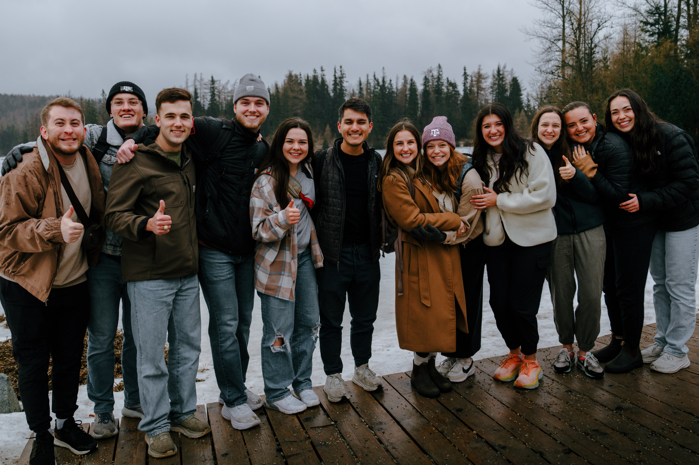

At Grace Bible Church, we believe every follower of Christ is called to play a part in spreading the Gospel around the world. Being located in College Station gives us a unique advantage in that we're partnered with several international organizations that make mission trips a regular reality. As a student and Fellow, I've had the privilege of participating in three of these trips in different capacities.

Slovakia
As a Fellow, I organized and led a team of 12 students on a week-long vision trip to Bratislava, Slovakia. We spent time alongside missionary families who have made Bratislava their home, learning firsthand how college ministry takes shape in a culture very different from our own. Throughout the week we met with college students, listened to learn about their values and beliefs, and shared our own. These trips carry real weight in both directions. For a Slovak student like Natalia, who came to faith in Christ and is now an active member of the campus ministry there, it can mean new life. And for the students we brought with us, these trips leave a lasting picture of what the world actually looks like beyond our own campus and city.
North Africa
As a college student, I traveled twice with a team to North Africa, once for six weeks and again for ten days. The region carries a deeply religious culture, where faith shapes daily rhythms, public life, and the way people understand the world. That made every conversation about faith and culture feel significant. We were guests in a world very different from our own, and we worked to be faithful, sharing the hope of the Gospel with as many people as we could, from coffee-filled conversations in small shops to longer friendships that developed over the summer.
These trips left a lasting impact on my global perspective as a Christ-follower. I witnessed first-hand the mismatched reality of unreached people who had no concept for our God in their lives. While this fills me with heartache, it also drives me to want to make a difference — not only in the city I live in, but around the world. I’m reminded of the significant phrase, “The harvest is plentiful, but the laborers are few,” and the command, “Go therefore and make disciples of all nations…”